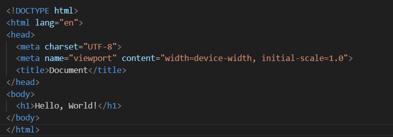
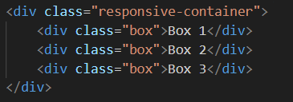
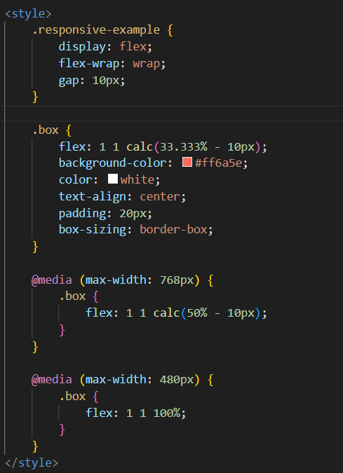
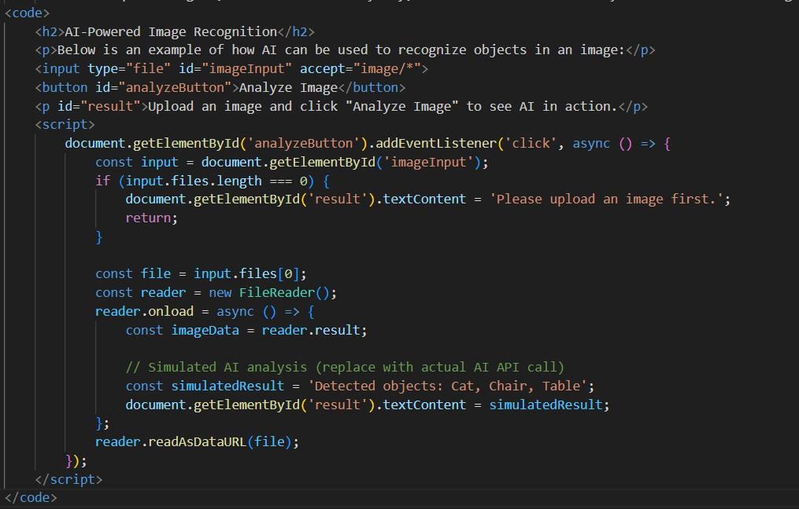

Skills
- Web Development
- Graphic Design
- UI/UX Design
- Brand Identity
- Content Strategy
Custom Design is all about creating unique and tailored solutions that meet the specific needs of clients. It involves understanding the client's vision, goals, and preferences to craft designs that are not only visually appealing but also functional and user-friendly. By focusing on customization, we ensure that every project stands out and delivers a personalized experience that resonates with the target audience.
Web design with responsive layout and SEO optimization ensures that websites are not only visually appealing but also highly functional and accessible across all devices. A responsive layout adapts seamlessly to different screen sizes, providing an optimal user experience whether on a desktop, tablet, or smartphone. Coupled with SEO optimization, it enhances the website's visibility on search engines, driving more traffic and improving user engagement. Together, these elements create a powerful combination that meets both user expectations and business goals.
Let's get started!



Responsive Layout is a design approach that ensures websites and applications adapt seamlessly to different screen sizes and devices. By using flexible grids, images, and CSS media queries, responsive layouts provide an optimal viewing experience for users, whether they are on a desktop, tablet, or smartphone. This approach not only enhances usability but also improves accessibility, making it a crucial aspect of modern web design.
SEO Optimization, or Search Engine Optimization, is the process of enhancing a website's visibility and ranking on search engine results pages (SERPs). It involves a combination of strategies, techniques, and best practices aimed at improving the quality and quantity of organic traffic to a website. By optimizing various elements of a website, businesses can ensure that their content is easily discoverable by search engines and relevant to users' search queries.
One of the key aspects of SEO is keyword research, which involves identifying the terms and phrases that potential users are searching for. These keywords are then strategically incorporated into the website's content, meta tags, headings, and URLs to improve its relevance to search engines. Additionally, creating high-quality, engaging, and informative content is crucial for attracting and retaining visitors, as well as earning backlinks from other reputable websites.
Technical SEO focuses on optimizing the website's structure and performance to ensure it is easily crawlable and indexable by search engine bots. This includes improving page load speed, ensuring mobile-friendliness, using secure HTTPS protocols, and fixing broken links or duplicate content issues. A well-structured website with a clear hierarchy and proper use of schema markup can significantly enhance its search engine visibility.
Another important component of SEO is off-page optimization, which involves building a strong online presence and reputation through link building, social media engagement, and other external factors. Earning high-quality backlinks from authoritative websites signals to search engines that the website is trustworthy and valuable, which can positively impact its rankings.
SEO is an ongoing process that requires continuous monitoring, analysis, and adaptation to stay ahead of competitors and keep up with search engine algorithm updates. By investing in SEO, businesses can improve their online visibility, drive targeted traffic, and ultimately achieve their marketing and business goals.
SEO Optimization Tactics
- Keyword Research: Use tools like Google Keyword Planner to identify relevant keywords.
- Meta Tags: Add descriptive and keyword-rich meta titles and descriptions.
- Header Tags: Use H1, H2, and H3 tags to structure content and include keywords.
- Alt Text: Add descriptive alt text to images for better accessibility and SEO.
- Internal Linking: Link to other pages on your website to improve navigation and SEO.
- Mobile Optimization: Ensure your website is mobile-friendly and responsive.
- Page Speed: Optimize images and use caching to improve load times.
- Backlinks: Build high-quality backlinks from reputable websites.
- Content Quality: Create engaging, informative, and original content.
- Analytics: Use tools like Google Analytics to monitor and improve performance.
SEO Optimization improves a website's visibility and ranking on search engines by using techniques like keyword research, meta tags, quality content, and mobile optimization. It enhances user experience, drives organic traffic, and supports business goals.
The future of web design is being profoundly shaped by advancements in artificial intelligence (AI). AI-powered tools are enabling designers to create more personalized, efficient, and innovative user experiences. From AI-driven design assistants that generate layouts and color schemes to machine learning algorithms that analyze user behavior and optimize interfaces, the possibilities are endless.
One of the key trends is the rise of conversational interfaces, such as chatbots and voice assistants, which are becoming integral to modern web design. These AI-driven features provide users with instant support and enhance engagement by offering a more interactive experience.
Additionally, AI is revolutionizing accessibility in web design. Tools that automatically generate alt text for images, transcribe audio content, and adapt interfaces for users with disabilities are making the web more inclusive than ever before.
As AI continues to evolve, web designers will increasingly rely on predictive analytics to anticipate user needs and deliver content that is both relevant and timely. This shift towards data-driven design will not only improve user satisfaction but also drive business success.
In the environment of AI, the future of web design is a blend of creativity and technology, where human ingenuity is augmented by intelligent systems to create experiences that are both functional and inspiring.
Web design and marketing offer small businesses an incredible opportunity to level the playing field with larger competitors. By leveraging modern tools and strategies, small businesses can create visually stunning websites that effectively communicate their brand and values. Coupled with targeted marketing efforts, they can reach their ideal audience, build meaningful connections, and drive growth. The digital landscape empowers small businesses to showcase their unique strengths, foster customer loyalty, and achieve success in ways that were once unimaginable.
AI-Powered Image Recognition
Below is an example of how AI can be used to recognize objects in an image:
Upload an image and click "Analyze Image" to see AI in action.

AI is transforming web design by enabling personalized experiences, conversational interfaces, and predictive analytics. It is revolutionizing accessibility and empowering designers to create innovative, data-driven solutions that anticipate user needs and drive business success.